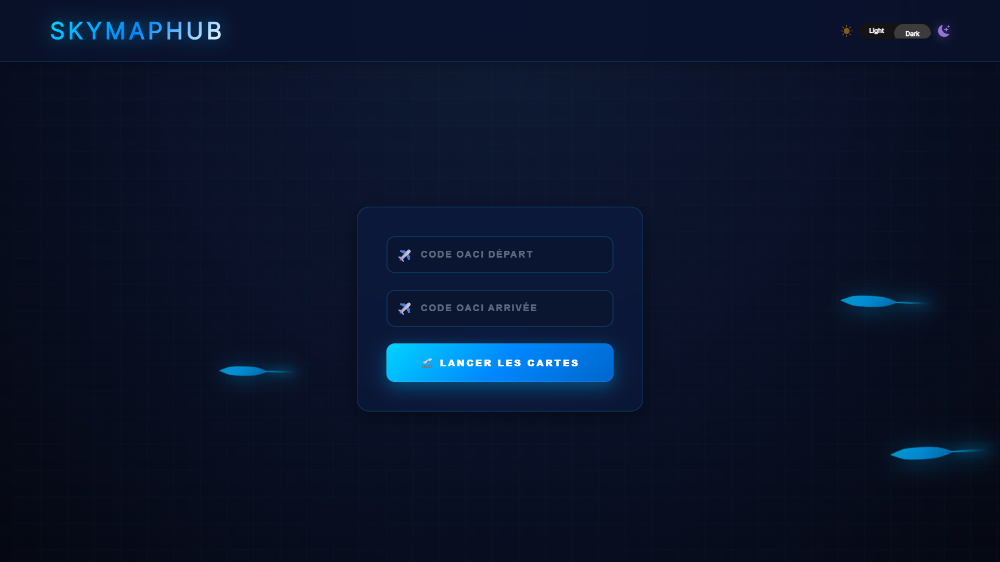

Obtention de la licence HAREC radioamateur
AdmisProjet de fin d'études : participation au concours covaciel
En coursDécouverte des différents services aéroportuaires
Découverte des différent service aéroportuaire
Support à l'utilisateur, déploiement de postes, gestion du stock

Creation site web pour la recherche de carte pour le vol simulateur ou réel
Voir le projet